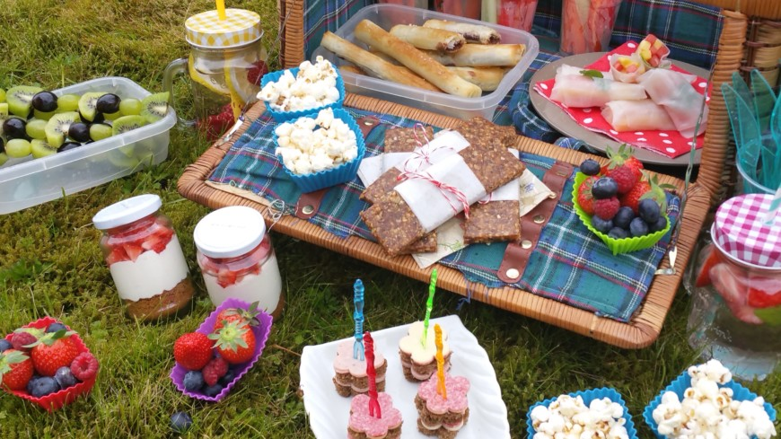

Soms kan het een uitdaging zijn om met kinderen te gaan wandelen in het bos. Dit kan heel makkelijk worden op gelost.
1. Zorg er voor dat je wat te eten en drinken mee neemt. (Zorg dat de kinderen er naar uit kijken om wat te gaan eten en drinken)
2. Laat je kinderen tot een bepaalde afstand gewoon los rennen en ontdekken. (erg belangrijk ook voor hun ontwikkeling ook dat ze zelf dingen ontdekken en vinden)
3. Neem op tijd en genoeg pauzes. ( dit verschilt heel erg per kind en leeftijd van de kinderen)
4. Laat je kinderen tussendoor ook spelen in de speeltuinen die je onderweg tegenkomt. ( en nee het hoeft niet in iedere speeltuin)
5. Stel een doel in voor je kinderen. Vertel ze waar je heen wilt en laat de kinderen zorgen dat je er komt. ( natuurlijk wel een beetje bijsturen waar nodig)
6. Laat je kinderen bij een kruispunt bepalen welke kant jullie op gaan (als je geen route volgt) zo hebben ze ook het idee dat ze je helpen met de keuze maken.
7. Bij een route heb je paaltjes die volgt. Laat je kinderen de paaltjes zoeken. Zo zijn ze ergens mee bezig en zijn ze mega trots op zichzelf als z ehet volgende paaltje hebben gevonden.
8. Geef je kinderen tussendoor een compliment over hoe goed ze aan het wandelen zijn en dat je het naar je zin hebt.
9. Luister ook goed naar je kinderen als ze aan geven dat ze even willen gaan zitten. ( zeg dan dat je bij het volgende bankje even wat gaat drinken, zo voelen ze zich gehoord en word het ook niet vervelend voor ze om te gaan wandelen)
Het allerbelangrijkste vind ik dat je moet genieten met je gezin en er een gezellig moment van moet maken.
Op die manier gaan je kinderen de volgende keer echt wel graag mee met wandelen en genieten zij er ook meer van.

Als je gaat picknicken met je kinderen zorg er altijd voor je dat je een kindvriendelijke picknick doet.
Zo kun je bijv. mee nemen en doen:
1. Fruit stukjes ( als je nog moet snijden geeft dat nogal een rommel)
2. Belegde broodjes ( voor kinderen erg leuk om dat in vormpjes te doen)
3. Iets lekkers ( voor jullie zelf in te vullen)
4. Servetten
5. Iets om mee te spelen in de tussen tijd
6. Laat ze niet de hele tijd op het kleed zitten.